Inicio
Vamos começar o nosso estudo entendendo os tipos de problemas que poderemos resolver. Após entender bem o “sabor” desses problemas (problemas de otimização), entenderemos quais métodos podem ser utilizados para resolvê-los.
O objetivo aqui é abrir a cabeça de vocês, mostrando que os problemas de otimização permeiam todas as áreas!
Problemas
Seja \(G=(N,E)\) um grafo em que \(N\) é um conjunto de vértices e \(E = \{(i,j), i\in N, j \in N\)}, o conjunto de arestas ligando os vértices, e ainda \(f:(i,j)\rightarrow\mathbb{R}\) uma função que atribui pesos aos arcos. O problema do caixeiro viajante consiste em se determinar uma rota que visite todos os vértices de G sem repetição, de forma que a soma dos pesos das arestas utilizadas seja mínimo
1TSP.
1Traveling Salesman Problem
Problemas
Os nós de um grafo podem ser pensados como pontos no espaço.
Problemas
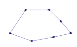
O problema se resume então a ligar todos os pontos, partindo de, e retornando ao mesmo ponto, de forma que o somatório das distâncias entre os pontos seja mínima.
Problemas
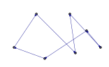
Note que existem muitas (mas muitas mesmo...) combinações possíveis para se realizar essa tarefa. Algumas melhores do que outras.
Problemas
Qual das duas soluções acima você acha que é a melhor? Claro que a segunda!
É importante ressaltar o que não constitui uma solução viável para um determinado problema, ou seja, uma solução infactível.
Problemas
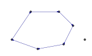
No caso acima, existe um ponto que não está no percurso, portanto a solução é infactível.
Problemas
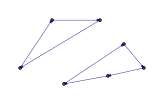
No caso acima, existem subrotas, o que não é permitido no problema do caixeiro viajante, sendo também uma solução infactível.
Problemas
Quais situações podem ser representadas como um problema do caixeiro viajante (traveling salesman problem - TSP)?
Problemas
ROTEIRIZAÇÃO DE VEÍCULOS
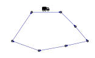
A aplicação mais natural é de fato em roteirização de veículos. Um veículo deve fazer entregas ou coletas em N locais, e retornar ao ponto inicial.
Problemas
CIRCUITOS ELETRÔNICOS (2D e 3D)
Conectar N pontos elétricos usando a menor quantidade de fio possível.
Problemas
CRIAÇÃO DE OBRAS DE ARTE
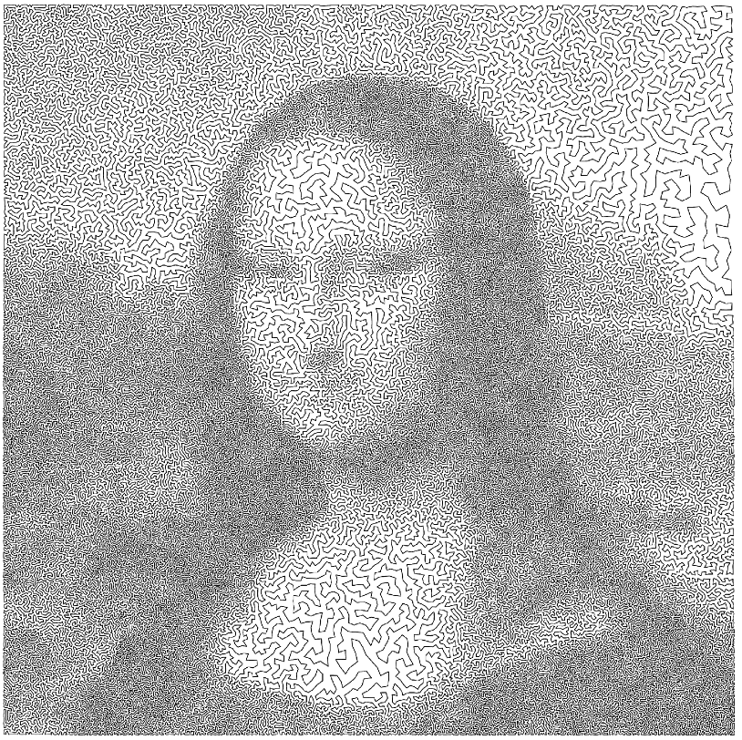
A solução ótima desta instância do problema com 100k pontos gera a obra de arte de Leonardo da Vinci. Para motivar a criação de novas soluções, um prêmio de $1000 é oferecido (link).
Problemas
Seja \(G=(N,E)\) um grafo em que \(N\) é um conjunto de vertices e \(E = \{(i,j), i\in N, j \in N\)}, o conjunto de arestas ligando os vértices, e ainda \(f:(i,j)\rightarrow\mathbb{R}\) uma função que atribui pesos aos arcos. A cada vértice é atribuído uma demanda, e existem \(K\) veículos de mesma capacidade \(Q\). Encontrar as menores rotas para os veículos, de tal forma que todos os clientes sejam atendidos, as capacidades não sejam excedidas, e todos os veículos deve sair do, e voltar ao depósito.
2VRP.
2Vehicle Routing Problem
Problemas
Diferentemente do TSP, o VRP sai e volta de um depósito.
Problemas
Todos os pontos ainda devem ser visitados.
Problemas
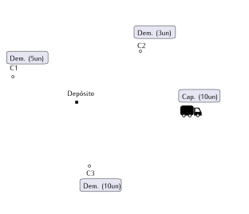
Cada ponto possui uma demanda, e cada veículo uma capacidade de transporte
Problemas
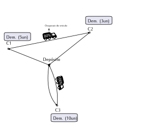
No problema original existe um número ilimitado de veículos de capacidades iguais.
Problemas
O objetivo é então duplo: minimizar tanto as distâncias percorridas pelos veículos quanto o número total de veículos.
Problemas
Sem exceder as capacidades dos mesmos.
Problemas
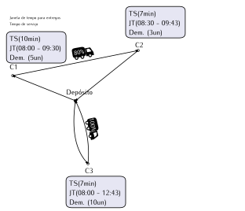
Uma extensão comum do VRP é a adição de janelas de tempo (time windows) VRPTW.
Problemas
Cada cliente possui uma janela de tempo que pode ser atendido, bem como um tempo de processamento. Se o veículo chegar antes ou depois da janela a coleta não é realizada.
Problemas
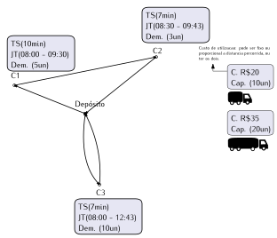
Uma outra extensão é o caso com veículos limitados e heterogêneos. (HVRPTW).
Problemas
Nesta variante existem veículos com capacidades diferentes, porém custos por utilização também diferentes.
Problemas
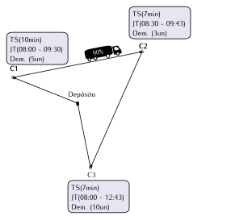
A rota pode ser feita por diversos veículos menores, poucos maiores, ou uma combinação.
Problemas
Dado um conjunto de objetos de tamanhos diferentes com valorações diferentes e uma “mochila” (bin) de capacidade finita. O problema da mochila consiste em determinar qual subconjunto de objetos será empacotado na mochila, de forma a maximizar o somatório dos valores de todos os itens, sem exceder a capacidade da mochila.
3
3knapsack problem
Problemas
- Imagine que você vai acampar na floresta e só possui uma mochila.
- Os itens que serão levados devem ser escolhidos com cuidado, pois a mochila possui uma capacidade limitada.
- De forma que cada item têm um valor diferente.
- Você tentará levar os itens mais “úteis” que caibam na mochila.
Considerando uma mochila com capacidade C = 130, o que você levaria? Qual a carga e a utilidade total da mochila?
Problemas
- Imagine que você vai acampar na floresta e só possui uma mochila.
- Os itens que serão levados devem ser escolhidos com cuidado, pois a mochila possui uma capacidade limitada.
- De forma que cada item têm um valor diferente.
- Você tentará levar os itens mais “úteis” que caibam na mochila.
Considerando uma mochila com capacidade C = 130, o que você levaria? Qual a carga e a utilidade total da mochila? Capacidade: 130, Utilidade: 50
Problemas
- O BPP é como o problema da mochila, porém não existe um valor para cada carga, mas sim uma quantidade de cada item.
- Diferentemente do problema da mochila, no BPP temos um número ilimitado de mochilas, e precisamos carregar todos os itens na menor quantidade possível.
Considerando mochilas com capacidade C = 500. Qual é o menor número de mochilas necessárias para empacotar todos os itens?
Problemas
Quais situações podem ser representadas como um BPP?
O BPP é um problema base da otimização, ou seja, ele pode representar diversos outros problemas, ou mesmo ser usado para parte da resolução em problemas mais complexos. Vejamos 2 exemplos (carregamento de paletes e VRP).
Problemas
No problema de carregamento de paletes (pallet loading problem), temos um número de caixas diferentes (tridimensionais), cada uma com uma quantidade. Precismos encontrar uma forma de carregar todas as caixas usando a menor quantidade de paletes possível.
Problemas
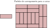
Usualmente, as caixas possuem instruções do próprio fabricante, indicando como fazer uma camada (de caixas do mesmo tipo) em um palete.
Problemas
Se considerarmos somente as camadas completas, não precisamos nos preocupar com a parte 3D do problema. Cada camada possui uma altura (que é a altura da caixa que a compõe).
Problemas
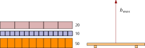
Assim, fazendo um pré processamento nas caixas, calculando quantas camadas completas temos de cada uma, o problema se resume a determinar quantas camadas de cada caixa compõe cada palete, de forma a minimizar o número de paletes utilizados. Ou seja, o BPP!
Problemas
A tabela de dados do problema ficaria algo como:
E os paletes teriam uma altura máxima permitida H.
Problemas
A mesma idéia pode ser usada em algoritmos para resolução do VRP. Lembre que cada cliente possui uma demanda, e cada veículo uma capacidade.
Problemas
Podemos pensar em um método de resolução em duas partes:
- Determinar quais grupos de clientes serão atendidos pelos mesmos carros.
- Para cada grupo desses, encontrar a melhor rota.
Problemas
Note que, novamente, a primeira parte da solução é basicamente um BPP. Devemos “encher” os carros com todos os clientes, usando a menor quantidade de carros possível. A tabela de dados ficaria da seguinte forma:
E os veículos tem uma capacidade total C.
Problemas
Dado um conjunto de objetos retangulares de comprimentos e larguras diferentes, tentar empacotar a maior quantidade de objetos possíveis em um retângulo maior, de forma a minimizar a área perdida no retângulo maior.
Problemas
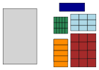
Como carregar os retângulos menores dentro do retângulo maior?
Problemas
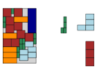
Note que não foi possível carregar todos os retângulos. Tentamos maximizar a área ocupada no retângulo maior.
Problemas
Quais aplicações existem para este tipo de problema (e suas soluções)?
- Corte de linha branca
- Corte de tecidos
- Corte de papel
Problemas
Quais aplicações existem para este tipo de problema (e suas soluções)?
- Ajuste de layout em jornais/paginas web
- Paletização de caixas em camadas
Problemas
Dado um conjunto de caixas e um contêiner, alocar as caixas dentro do contêiner de forma a maximizar o espaço utilizado.
CLP 4
4Container Loading Problem
Problemas
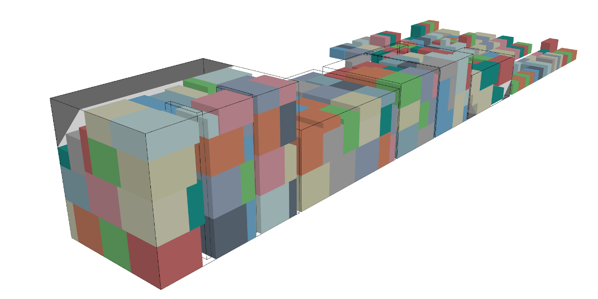
Como carregar o maior número possível de caixas?
Problemas
Muitos problemas podem ser mesclados, de forma a unificar as decisões de otimização em um único contexto. Isso infelizmente deixa os problemas mais difíceis (e mais atraentes de serem resolvidos).
Problemas
Imagine o VRP com todas as restrições, porém as demandas e capacidades dos veículos não são escalares, mas volumétricas. Volume dos veículos e caixas nas demandas. Quais restrições estariam envolvidas nessa variante?.
Problemas
- À cada nível hierárquico de gerenciamento estão associados diversos problemas de produção: estratégico , tático e operacional
- Estratégico: trata da decisões a longo prazo, compra de máquinas, localização de facilidades, balanceamento de linhas de produção.
- Tático: trata do planejamento de atividades a médio prazo. Decisões como níveis de mão de obra, hora extra, quantidades a serem produzidas, todas em relação à demandas agregadas.
- Operacional: controla as atividades em nível diário, com informações provenientes do nível tático. Designação de tarefas à máquinas e programação (scheduling) das tarefas em cada máquina (horário de início e fim).
Problemas
Dado um conjunto de pontos distribuídos geograficamente em que cada ponto possui uma demanda, e um número \(p\) de centros de distribuição, cada um com uma capacidade de fornecimento, determinar a melhor localização dos centros de distribuição de forma a atender todas as demandas e minimizar as distâncias totais entre os clientes e os centros.
Problemas
Cada elemento possui uma demanda que deve ser atendida.
Problemas
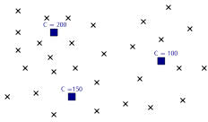
Existem p centros que possuem, cada um, uma capacidade.
Problemas
Onde localizar os centros, e a quais pontos atribui-los, de forma a atender todas as demandas?
Problemas
Quais aplicações existem para este tipo de problema (e suas soluções)?
- Localização de cilos de armazenagem de grãos
- Localização de estações móveis para vacinação de COVID
- Localização de centros de distribuição
Problemas
O problema de balanceamento de linhas simples, consiste em, dado a sequência de atividades de um produto (grafo de precedências), em que cada nó do grafo representa uma tarefa a ser realizada, e cada tarefa possui um tempo de processamento, bem como o tempo de ciclo da linha, alocar tarefas a serem realizadas a postos, com o objetivo de minimizar o número total de postos. A minimização dos postos implica na minimização dos trabalhadores alocados à linha
SALBP15.
5Simple Assembly Line Balancing Problem
Problemas
Quais tarefas podem ser agrupadas em postos, de forma que o tempo de ciclo não seja excedido, e as restrições de precedência sejam satisfeitas?
Problemas
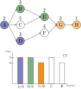
Considerando um tempo de ciclo de 5 unidades, a solução acima é factível.
Problemas
Dado um horizonte de planejamento de \(t\) períodos, em que existe uma demanda em cada um, bem como um custo para armazenamento dos itens no estoque e uma capacidade de produção. O problema requer a determinação das quantidades a serem produzidas em cada período,de forma a atender a demanda do produto e minimizar os custos de estoque.
Planejamento da produção 6
6Lot Sizing Problem
Problemas
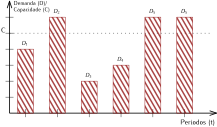
Quanto produzir em cada período, sem exceder a capacidade e minimizando o estoque?
Problemas
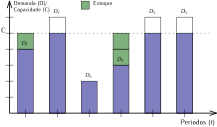
O planejamento acima detém custos de estoques, mas atende às demandas de todos os períodos.
Problemas
O sequenciamento de produção desdobra o planejamento para o nível operacional: cada produto tem um tempo de processamento, uma data de entrega, um conjunto de máquinas em que pode ser processado e um tempo de setup em cada máquina. Determinar quais produtos devem ser processados em quais máquinas e em quais períodos de tempo, de forma que o tempo total de produção seja minimizado.
Programação da produção7
7Scheduling, JOB shop scheduling, flow shop scheduling
Problemas
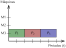
Considerando 3 produtos que podem ser processados em 3 máquinas, cada um leva um tempo de 2 unidades de processamento. A solução acima é factível.
Problemas
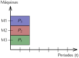
Porém essa é melhor, a taxa de ocupação das máquinas é maior e o tempo de finalização dos processamentos é menor.
Problemas
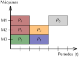
Alguns produtos são compostos de diversos níveis, por exemplo: um carro é composto de rodas, chassi, etc...e cada uma dessas partes, por sua vez, também é composta por outras. Essa estrutura pode ser representada por uma árvore do produto.
Além de todas as outras restrições, a ordem de precedência dos produtos deve ser obedecida (não é possível montar o carro sem antes ter as rodas)
Problemas
Dada uma rede de precedência das atividades que compõe um projeto, bem como os recursos que são necessários para executar as atividades (pessoas, por exemplo), e os tempos que as mesmas levam para executá-los, determinar o período de inicio e de fim de todas as atividades, bem como quais recursos estarão alocados à quais atividades, de forma a minimizar o tempo de finalização da última atividade do projeto.
Planejamento de projetos 8
8Project scheduling, resource-constrained project scheduling
Problemas
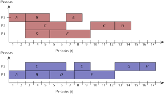
As precedências das etapas do projeto devem ser atendidas.
Se temos recursos (pessoas) ilimitados, a solução de cima é factível. A solução de baixo considera a limitação de recursos (2 pessoas).
Problemas
Dado um conjunto de recursos e um conjunto de atividades. Cada recurso tem uma aptidão para executar cada atividade. Como alocar recursos à atividades de forma a maximizar a soma das aptidões? Cada recurso é atribuído a uma única atividade e toda atividades deve ter um recurso alocado a ela.
Problema de designação 9
9Assignment problem
Problemas
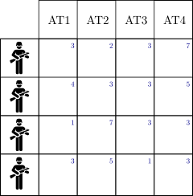
Cada soldado consegue executar as 4 tarefas.
Problemas
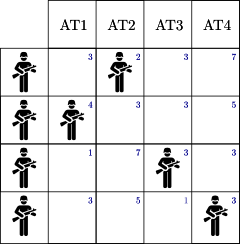
Quais soldados realizam quais tarefas?
Problemas
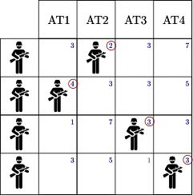
Existe alguma alocação com maior soma de aptidões?
Problemas
Dado um horizonte de planejamento e um conjunto de funcionários, alocar turnos à funcionários de forma a atender dois conjuntos de restrições, hard e soft. As restrições podem envolver legislações de folgas mínimas, cobertura de funcionários, preferências de turnos, etc...
Agendamento de enfermeiras 10
10Nurse scheduling problem, Nurse rostering problem, timetabling
Problemas
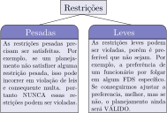
Problemas
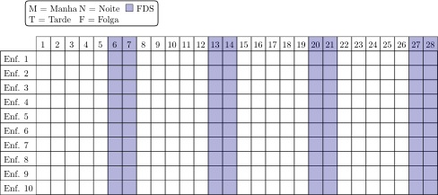
Problemas
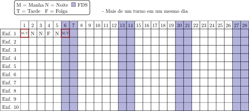
Problemas
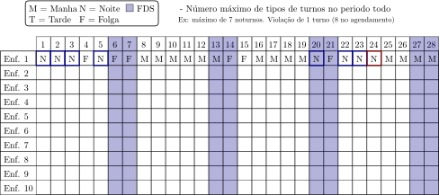
Problemas
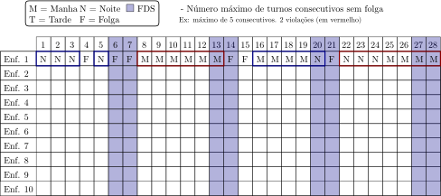
Problemas
O problema de timetabling, na sua forma mais genérica, lida com a alocação de horários à recursos. Diversos problemas se encaixam na categoria de timetabling: sports timetabling, railway timetabling, airflight timetabling, nurse rostering,...
Problemas
No entanto, quando o termo é usado, geralmente ele se refere ao educational timetabling, ou seja, alocação de professores/alunos à períodos e a salas de aula, satisfazendo um conjunto de restrições do tipo hard, e ao máximo possível um conjunto de restrições do tipo soft.
Problemas
Vamos considerar próprio exemplo do nosso departamento. Temos duas salas disponíveis, PM03 e PM04.
Problemas
Podemos dividir os tempos disponíveis nas salas em períodos (manhã/tarde, etc...), bem como em dias de utilização.
Problemas
Existe um conjunto de turmas que precisam ocupar esses espaços para cursar as disciplinas.
Problemas
Cada turma deve cumprir um número específico de disciplinas no semestre.
Problemas
Além disso, existe um conjunto de professores.
Problemas
E cada professor pode ministrar um conjunto de disciplinas.
Problemas
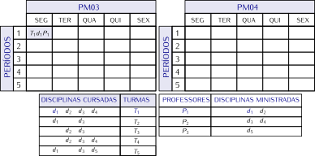
Precisamos então, atribuir o conjunto de elementos (Turma, Disciplina, Professor) aos períodos de tempo disponíveis nas salas.
Problemas
Quais poderiam ser as restrições (hard) para esse problema?
Problemas
Uma delas é a de que todas as turmas devem cumprir todas as disciplinas do semestre (disciplinas da turma \(T_1\) na imagem acima).
Problemas
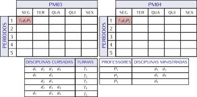
Além disso, uma mesma turma não pode ser alocada em aulas no mesmo período.
Problemas
O mesmo para os professores que estão ministrando as disciplinas.
Problemas
Fora essas, quais restrições do tipo soft podem existir?
Problemas
Preferência de professores por horários, turmas por professores, etc...
Problemas
E a função objetivo? O que podemos usar para quantificar a qualidade de uma solução?
Problemas
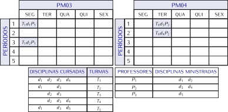
Podemos, por exemplo, priorizar horários conjuntos (PM04) em detrimento de espaços vagos na grade das turmas/professores.
Atividade
Considerando os seguinte problemas:
- TSP
- VRP
- Localização de facilidades
- Sequenciamento (com uma máquina)
- Carregamento 2D
Faça o que se pede:
- Crie uma lista com todas as restrições que devem existir, para que uma solução seja considerada factível.
- Dadas duas soluções para um mesmo problema, como você decidiria qual é melhor que a outra? Em outras palavras, qual deveria ser a função objetivo para o problema?